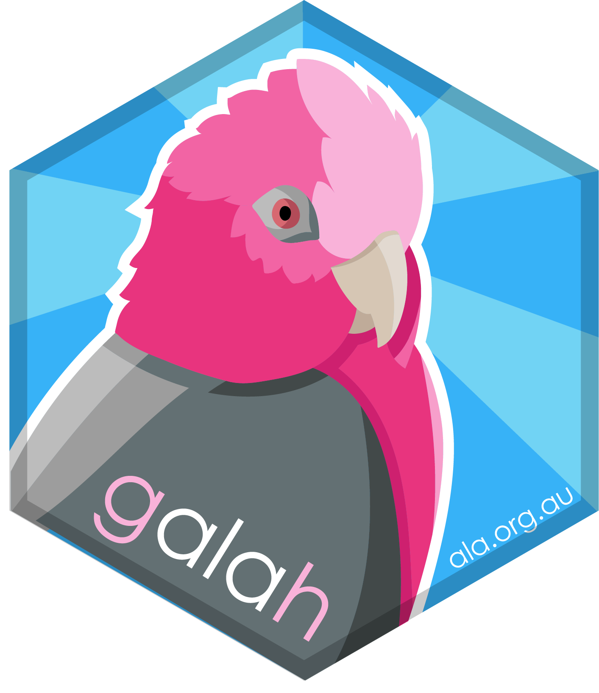

Spatial filtering
Callum Waite & Shandiya Balasubramaniam
2023-10-13
Source:vignettes/spatial_filtering.Rmd
spatial_filtering.RmdBiodiversity queries to the ALA usually require some spatial filtering. Let’s see how spatial data are stored in the ALA and a few different methods to spatially filter data with galah and other packages.
Most records in the ALA contain location data in the form of two key
fields: decimalLatitude and decimalLongitude.
As expected, these fields are the decimal coordinates of each
occurrence, with south and west values denoted by negatives. While there
may be some uncertainty in these values (see field
coordinateUncertaintyInMeters), they are generally very
accurate.
While these are very important and useful fields, very rarely will we
encounter situations that require queries directly calling
decimalLatitude and decimalLongitude. Instead,
the ALA and galah have a number of features that make spatial queries
simpler.
Contextual and spatial layers
Often we want to filter results down to some commonly defined spatial
regions, such as states, LGAs or IBRA/IMCRA regions. The ALA contains a
large range (>100) of contextual and spatial layers, in-built as
searchable and queriable fields. They are denoted by names beginning
with "cl", followed by an identifying number that may be up
to 6 digits long. These fields are each based on shapefiles, and contain
the names of the regions in these layers that each record lies in.
We strongly recommend using search_fields() to check
whether a contextual layer already exists in the ALA that matches what
you require before proceeding with other methods of spatial filtering.
These fields are all able to be queried with filter()and so
they are generally easier to use.
Suppose we are interested in querying records of the Red-Necked Avocet (Recurvirostra novaehollandiae) in the Coorong wetlands in South Australia. We can search the ALA fields for wetlands.
galah_config(email = "your_email_here", verbose = FALSE)
search_fields("wetlands")## # A tibble: 3 × 3
## id description type
## <chr> <chr> <chr>
## 1 cl901 Directory of Important Wetlands fields
## 2 cl11004 Ramsar Wetlands (updated March 2026) fields
## 3 cl11192 Ramsar_Wetlands_of_AustraliaWGS84 fieldsOur search identifies that layer cl901 seems to match
what we are looking for. We can then either view all possible values in
the field with show_values(), or search again for our
particular field.
search_fields("cl901") |> search_values("coorong")## • Showing values for 'cl901'.## # A tibble: 1 × 1
## cl901
## <chr>
## 1 The Coorong, Lake Alexandrina & Lake AlbertWe can filter all occurrences for exact matches with this value,
"Lake Eyre". Our galah query can be built as
follows:
galah_call() |>
identify("Recurvirostra novaehollandiae") |>
filter(cl901 == "The Coorong, Lake Alexandrina & Lake Albert") |>
collect() |>
head(5) |>
gt::gt()## Retrying in 1 seconds.
## Retrying in 2 seconds.
## Retrying in 4 seconds.
## Retrying in 8 seconds.
## Retrying in 16 seconds.| recordID | scientificName | taxonConceptID | decimalLatitude | decimalLongitude | eventDate | basisOfRecord | occurrenceStatus | dataResourceName |
|---|---|---|---|---|---|---|---|---|
| 00630f58-ee78-4f69-ba39-718b0a1c3356 | Recurvirostra novaehollandiae | https://biodiversity.org.au/afd/taxa/c69e7308-527a-429d-a80d-143bd20b5100 | -35.59293 | 139.0218 | 2008-11-18 | HUMAN_OBSERVATION | PRESENT | SA Fauna |
| 0071444e-ddf2-45dc-9a10-c6399686e306 | Recurvirostra novaehollandiae | https://biodiversity.org.au/afd/taxa/c69e7308-527a-429d-a80d-143bd20b5100 | -35.57719 | 138.9923 | 2008-01-01 | HUMAN_OBSERVATION | PRESENT | SA Fauna |
| 008a2e6c-26b4-4f4e-a428-b0330db53466 | Recurvirostra novaehollandiae | https://biodiversity.org.au/afd/taxa/c69e7308-527a-429d-a80d-143bd20b5100 | -35.52831 | 138.8280 | 2017-11-19 17:15:00 | HUMAN_OBSERVATION | PRESENT | eBird Australia |
| 00b11f13-0100-4471-b18b-7e9736ddeeaf | Recurvirostra novaehollandiae | https://biodiversity.org.au/afd/taxa/c69e7308-527a-429d-a80d-143bd20b5100 | -36.18001 | 139.6589 | 2017-08-05 13:25:00 | HUMAN_OBSERVATION | PRESENT | eBird Australia |
| 00c14d0c-2d2d-4bc6-bb86-712809dacc1f | Recurvirostra novaehollandiae | https://biodiversity.org.au/afd/taxa/c69e7308-527a-429d-a80d-143bd20b5100 | -35.52306 | 138.7950 | 2010-03-07 | HUMAN_OBSERVATION | PRESENT | BirdLife Australia, Birdata |
Filtering data to a polygon
While server-side spatial information is useful, there are likely to
be cases where the shapefile or region you wish to query will not be
pre-loaded as a contextual layer in the ALA. In this case, shapefiles
can be introduced to the filtering process using the {sf} package and
the geolocate() function. Shapefiles can be provided as an
sf object, whether that is by importing them with
sf::st_read() or taking a POLYGON or
MULTIPOLYGON character string and transforming them with
sf::st_as_sfc().
For instance, we might interested in species occurrences in King
George Square, Brisbane. We can take the MULTIPOLYGON
object for the square (as sourced from the Brisbane City
Council) and transform it into sfc and then
sf objects.
king_george_sq <- "MULTIPOLYGON(((153.0243 -27.46886, 153.0242 -27.46896, 153.0236 -27.46837, 153.0239 -27.46814, 153.0239 -27.46813, 153.0242 -27.46789, 153.0244 -27.46805, 153.0245 -27.46821, 153.0246 -27.46828, 153.0247 -27.46835, 153.0248 -27.46848, 153.0246 -27.4686, 153.0246 -27.46862, 153.0245 -27.46871, 153.0243 -27.46886)))" |>
sf::st_as_sfc() |>
sf::st_as_sf()We can provide this MULTIPOLYGON in our filter as the
argument of geolocate() to assess which species have been
recorded in King George Square.
galah_call() |>
geolocate(king_george_sq) |>
select(decimalLatitude,
decimalLongitude,
eventDate,
scientificName,
vernacularName) |>
collect() |>
head(10) |>
gt::gt()## No CRS given, assuming WGS84 (EPSG:4326)| decimalLatitude | decimalLongitude | eventDate | scientificName | vernacularName |
|---|---|---|---|---|
| -27.46872 | 153.0241 | 2026-04-15 14:28:00 | Threskiornis moluccus | Australian White Ibis |
| -27.46868 | 153.0243 | 2025-07-12 13:04:19 | Threskiornis moluccus | Australian White Ibis |
| -27.46866 | 153.0242 | 2025-10-31 12:34:07 | Threskiornis moluccus | Australian White Ibis |
| -27.46862 | 153.0243 | 2006-03-30 09:32:00 | Threskiornis moluccus | Australian White Ibis |
| -27.46861 | 153.0244 | 2023-12-02 09:12:02 | Cosmophasis baehrae | NA |
| -27.46861 | 153.0242 | 2025-06-13 12:19:00 | Threskiornis moluccus | Australian White Ibis |
| -27.46859 | 153.0242 | 2025-09-17 10:16:31 | Threskiornis moluccus | Australian White Ibis |
| -27.46859 | 153.0240 | 2026-04-03 22:30:10 | Burhinus (Burhinus) grallarius | Bush Stone-curlew |
| -27.46855 | 153.0239 | 2024-02-03 20:45:00 | Mediastinia | NA |
| -27.46854 | 153.0243 | 2025-05-31 08:08:00 | Achyra affinitalis | Grass Moth |
There is a second argument of geolocate() called
type, which defaults to value "polygon". By
setting the type argument to "bbox", the
provided POLYGON or MULTIPOLYGON will be
converted into the smallest bounding box (rectangle) that contains the
POLYGON. In this case, records will be included that may
not exactly lie inside the provided shape.
galah_call() |>
geolocate(king_george_sq, type = "bbox") |>
select(decimalLatitude,
decimalLongitude,
eventDate,
scientificName,
vernacularName) |>
collect() |>
head(10) |>
gt::gt()## No CRS given, assuming WGS84 (EPSG:4326)
## Data returned for bounding box:
## xmin = 153.0236 xmax = 153.0248
## ymin = -27.46896 ymax = -27.46789| decimalLatitude | decimalLongitude | eventDate | scientificName | vernacularName |
|---|---|---|---|---|
| -27.46892 | 153.0241 | 2026-04-02 09:53:51 | LEPIDOPTERA | Butterflies |
| -27.46889 | 153.0244 | 2015-10-09 | Burhinus (Burhinus) grallarius | Bush Stone-curlew |
| -27.46882 | 153.0236 | 2019-04-21 14:40:00 | Threskiornis moluccus | Australian White Ibis |
| -27.46882 | 153.0236 | 2005-08-28 12:18:00 | Threskiornis moluccus | Australian White Ibis |
| -27.46872 | 153.0241 | 2026-04-15 14:28:00 | Threskiornis moluccus | Australian White Ibis |
| -27.46869 | 153.0238 | 2023-04-08 17:49:00 | Entomyzon cyanotis | Blue-faced Honeyeater |
| -27.46868 | 153.0238 | 2024-07-15 15:00:18 | Pseudanapaea denotata | NA |
| -27.46868 | 153.0238 | 2025-03-19 06:58:00 | Intellagama lesueurii | Water Dragon |
| -27.46868 | 153.0238 | 2024-01-13 15:07:42 | Lyramorpha (Lyramorpha) rosea | Litchi Stink Bug |
| -27.46868 | 153.0243 | 2025-07-12 13:04:19 | Threskiornis moluccus | Australian White Ibis |
Large shapefiles
The type argument with option "bbox" is
provided because sf objects with >500 vertices will not
be accepted by the ALA. In the event you have a large shapefile, using
type = "bbox" will at least enable an initial reduction of
the data that is downloaded, before finer filtering to the actual
shapefile will obtain the desired set of occurrences. Alternatively, one
can also perform the "bbox" reduction before passing the
shape to geolocate() by using
sf::st_bbox().
A common situation for this to occur is when a shapefile with multiple shapes is provided, where we are interested in grouping our results by each shape. Here is a mock workflow using a subset of a shapefile of all 2,184 Brisbane parks.
Let’s say we are interested in knowing which parks in the Brisbane postcode 4075 have the most occurrences of the Scaly-Breasted Lorikeet (Trichoglossus chlorolepidotus) since 2020. We can download the entire shapefile from the link above, and perform our filtering and summarising as follows:
brisbane_parks <- sf::st_read("path/to/Park___Locations.shp") |>
sf::st_make_valid() |>
filter(POST_CODE == 4075)
# Convert shapefile to a bounding box
brisbane_parks_bbox <- brisbane_parks |> sf::st_bbox()
# Find all occurrences of Trichoglossus chlorolepidotus in the bounding box in 2022
lorikeet_brisbane <- galah_call() |>
filter(scientificName == "Trichoglossus chlorolepidotus",
year >= 2020) |>
geolocate(brisbane_parks_bbox, type = "bbox") |>
collect()## Data returned for bounding box:
## xmin = 152.96331 xmax = 152.99668
## ymin = -27.57737 ymax = -27.51606## Retrying in 1 seconds.
## Retrying in 2 seconds.
## Retrying in 4 seconds.
## Retrying in 8 seconds.
# Filter records down to only those in the shapefile polygons
lorikeet_brisbane |>
# Create a point geometry based on the occurrence coordinates
sf::st_as_sf(coords = c("decimalLongitude", "decimalLatitude"), crs = sf::st_crs(brisbane_parks), remove = FALSE) |>
# identify which park each occurrence sits in with st_intersects()
mutate(intersection = sf::st_intersects(geometry, brisbane_parks) |> as.integer(),
park = ifelse(is.na(intersection), NA, brisbane_parks$PARK_NAME[intersection])) |>
# Filter out occurrences that did not occur in a park
filter(!is.na(park)) |>
# Drop the geometry column
sf::st_drop_geometry() |>
# Summarise the top 10 parks for lorikeet sightings in 2022
group_by(park) |>
summarise(counts = n()) |>
arrange(desc(counts)) |>
head(10)## # A tibble: 10 × 2
## park counts
## <chr> <int>
## 1 NYUNDARE-BA PARK 1116
## 2 SHERWOOD ARBORETUM 1059
## 3 FAULKNER PARK 66
## 4 BENARRAWA RESERVE 64
## 5 FORT ROAD BUSHLAND 61
## 6 STRICKLAND TERRACE PARK 58
## 7 NOSWORTHY PARK 40
## 8 GRACEVILLE RIVERSIDE PARKLANDS 33
## 9 HORACE WINDOW RESERVE 19
## 10 GRACEVILLE AVENUE PARK 10Some shapefiles cover large geographic areas with the caveat that even the bounding box doesn’t restrict the number of records to a value that can be downloaded easily. In this case, we recommend more nuances and detailed methods that can be performed using looping techniques. One of our ALA Labs blog posts, Hex maps for species occurrence data, has been written detailing how to approach larger problems such as this.